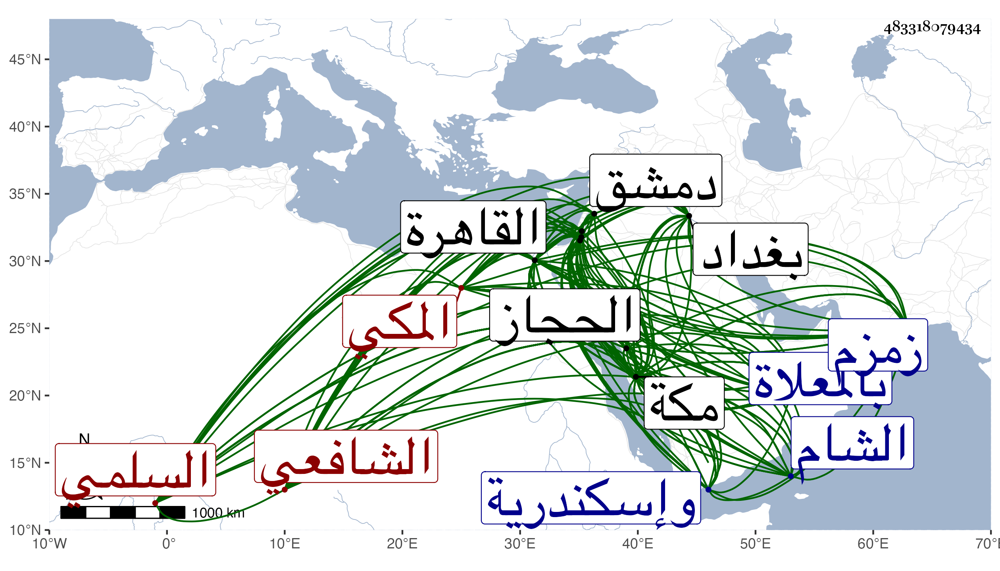

0902Sakhawi.DawLamic.ITO20230111-ara1.EIS1600.483318079434
Biography ID: 483318079434
629
علي بن أحمد بن محمد بن سلامة بن عطوف بن يعلى النور أبو الحسن السلمي المكي الشافعي ويعرف بابن سلامة . ولد في سابع شوال سنة ست وأربعين وسبعمائة بمكة ونشأ بها وسمع من خليل المالكي والعز بن جماعة والعفيف اليافعي والجمال بن عبد المعطي والكمال بن حبيب ومما سمعه عليه مسند الشافعي والطيالسي وسنن ابن ماجه وأسباب النزول وغيرهم ، وارتحل إلى بغداد فسمع بها من عبد الدائم بن عبد المحسن الدواليبي والسراج عمر بن علي القزويني ومحمد بن عبد الرحمن ابن عسكر وطائفة ثم سافر منها إلى دمشق فسمع بها من العماد بن كثير والتقي بن رافع وابن أميلة والصلاح بن أبي عمر والجمال الحارثي وابن قاضي الزبداني والبدر بن قواليح ومحمد بن عبد الله الصفوي والشمس بن قاضي شهبة وغيرهم بها وكذا بالقدس والخليل ونابلس وإسكندرية وعدة وسمع بالقاهرة من الزين بن القارئ والبهاء ابن خليل وأبي البقاء السبكي والجمال الباجي وجمع وأقام بها سنين ثم رجع إلى مكة وأجاز له جماعة من كثير من البلدان التي سمع بها ومن غيرها يجمع شيوخه بالسماع والإجازة مشيخته المتضمنة لفهرست مروياته أيضا تخريج التقي بن فهد ومما سمعه على ابن قواليح صحيح مسلم وعلى ابن أميلة مشيخة الفخر وعلى الصلاح من مسند أحمد وعلى ابن القارئ جزء ابن الطلاية ، وتلا بالسبع بمكة على يحيى بن صفوان الأندلسي وبالقاهرة على التقي البغدادي وتوغل في القراءات وأذن له في الإقراء وقال ابن قاضي شهبة أنه أخذ عن الأذرعي وكذا تفقه بابن الملقن والأبناسي وأذنا له في الإفتاء والتدريس وفي الشام كما ذكر بالشمس بن قاضي شهبة وأنه أذن له أيضا ، وتصدى لإقراء القراءات والفقه وغيرهما بمكة زمنا طويلا وكذا أفتى لكن قليلا باللفظ غالبا تأدبا مع قضاة مكة وكتب لأمراء مكة كالسيد حسن بن عجلان وباشر في المسجد الحرام سنين وأعاد في مكة بالمنصورية ، وكان شيخا عارفا عالما بالقراءات السبع والفقه ذا فوائد حديثية وأدبية يذاكر بها كثير التواضع حسن العشرة ذا حظ من عبادة ومداومة على ورد في الليل وفيه خير ومروءة وله نظم وحدث بالكثير من مسموعاته أخذ عنه الأئمة كشيخنا والزين رضوان والتقي بن فهد والجمال بن موسى والأبي وخلق فيهم من هو بقيد الحياة بمكة والقاهرة جماعة وصار بأخرة مسند الحجاز . مات في رابع عشري شوال سنة ثمان وعشرين بمكة وصلي عليه ثم دفن بالمعلاة وكانت جنازته حافلة وبلغنا أنه مازال يقول عند احتضاره أحبه الله حتى فارق الدنيا وممن ترجمه وأثنى عليه التقي الفاسي في مكة وشيخنا في معجمه وقال أنه كان شيخا عارفا اشتغل كثيرا وعلى ذهنه فوائد فقهية وأدبية وحديثية قال وباشر الشهادة فلم يحمد فيها انتهى . ومما كتب به إلى ابن الجزري مع هدية ماء زمزم من نظمه :
| ولقد نظرت فلم أجد يهدى لكم | غير الدعاء المستجاب الصالح |
| أو جرعة من ماء زمزم قد سمت | فضلا على مد الفرات السائح |
| هذا الذي وصلت له يد قدرتي | والحق قلت ولست فيه بمازح |
فأجابه بقوله :
| وصل المشرف من إمام مرتضى | نور الشريعة ذي الكمال الواضح |
| وذكرت أنك قد نظرت فلم تجد | غير الدعاء المستجاب الصالح |
| أو جرعة من ماء زمزم حبذا | ما قد وجدت ولست فيه بمازح |
| أما الدعاء فلست أبغي غيره | ما كنت قط إلى سواه بطامح |
والمقريزي في عقوده قال : وكان له حظ من العبادة ونظم الشعر ، وصحبني مدة أعوام بالقاهرة ومكة وكان لي به أنس وفوائد ، وصار مسند الحجاز حتى مات وكتب إلي من مكة مع هدية :
| خير الهدايا من أباطح مكة | دعوات صدق من أخ لك قد صفا |
| وقت الطواف وفي السجود وعندما | يمضي إلى المسعاة من باب الصفا |
